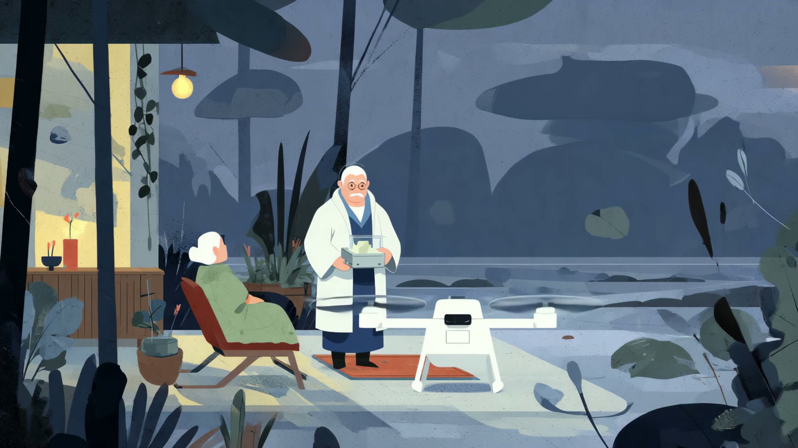

《2036》是一支以生成式人工智能创作的动画作品，想象十年之后的日常城市图景。
影片设定在 2036 年的海河两岸：通勤无人机沿水面低空穿行，新的交通秩序与旧的城市肌理叠合在一起。作品并不渲染技术的奇观，而是把视线放回到普通人的生活节奏——在飞行器与高楼之间，人如何继续过着平静、具体而温热的日子。
它是一次关于"低空经济"如何介入生活的视觉假设，也是对技术乐观主义的一种克制的注视：未来不是断裂，而是日常的缓慢生长。
